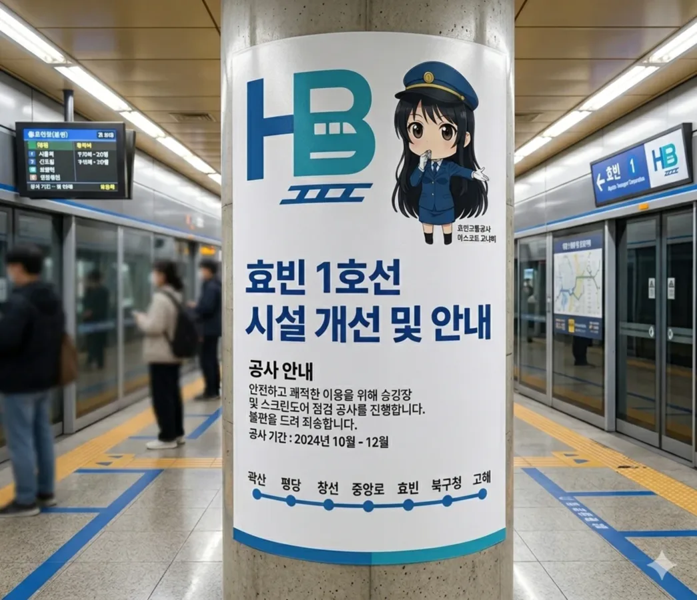
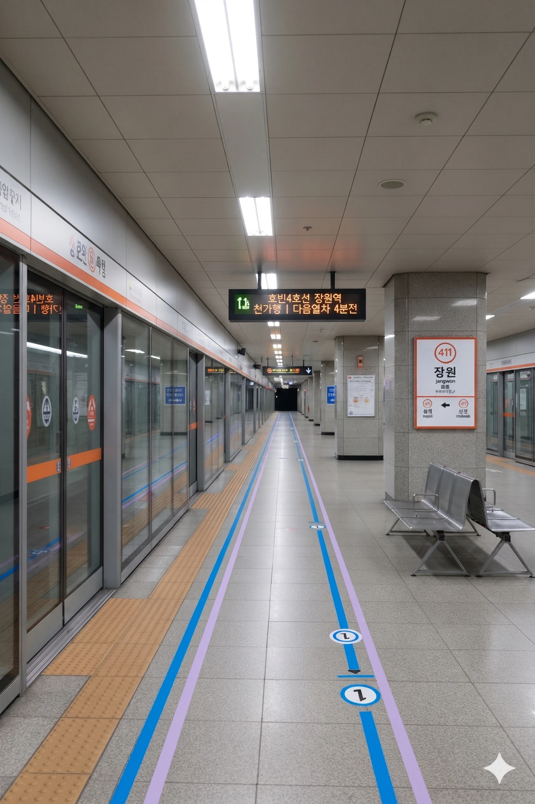
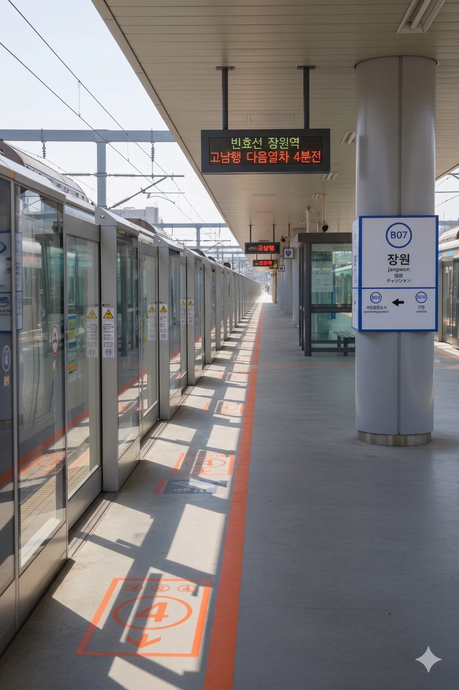

효빈 도시철도 1호선 113-2번 및 4호선 411번 및 빈효선 B07번. 중구와 청엽구의 경계에 위치하여 두 자치구의 교통 수요를 모두 담당하는 중요한 환승역이다. 역명인 '장원'은 예전에 이 동네 사람들이 장원급제를 많이 해서 '장원촌'이라 불렸던 유래를 따른다.
|
1
4
빈
|
||
|---|---|---|
| 번호 | 주요 시설 및 방향 | 비고 |
| 1 | 효빈중학교 | |
| 2 | 정동사거리 | |
| 3 | 정동사거리 | |
| 4 | 정동아파트 | |
| 5 | 장원빌라 | |
| 6 | 장원초등학교 | |
| 7 | 청엽구 | |
| 8 | 효빈동 | |
| 9 | 효빈동행정복지센터 | |
| 10 | 효빈고등학교 | |
※ 2면 3선 상대식 승강장 (중선 포함)

| 오석 ↑ | ||||
| 하행 | ㅣ | ㅣ | ㅣ | 상행 |
| ↓ 동리 | ||||
| 상행 | 1 효빈 도시철도 1호선 (탄성지선 완행/급행) | 오석 · 창선 방면 (급행 정차) |
| 하행 | 1 효빈 도시철도 1호선 (탄성지선 완행/급행) | 승남해수욕장 방면 (급행 정차) |
※ 상대식 승강장 (2면 2선)

| 오석 ↑ | |||
| 하행 | ㅣ | ㅣ | 상행 |
| ↓ 신덕 | |||
| 상행 | 4 효빈 도시철도 4호선 (완행/급행) | 해운산업지구 방면 (급행 정차) |
| 하행 | 4 효빈 도시철도 4호선 (완행/급행) | 천가 방면 (급행 정차) |
※ 지상 2층 상대식 승강장 (2면 2선)

| 효빈동신도시 ↑ | |||
| 상행 | ㅣ | ㅣ | 하행 |
| ↓ 신덕 | |||
| 상행 | 빈 빈효선 광역전철 (완행/급행) | 효빈항 방면 (급행 정차) |
| 하행 | 빈 빈효선 광역전철 (완행/급행) | 고남 방면 (급행 정차) |
| 장원역 이용객 통계 | |||||
|---|---|---|---|---|---|
| 연도 | 1 | 4 | 빈 | 합계 | 비고 |
| 2020년 | 20,616명 | 18,834명 | 2,423명 | 41,873명 | |
| 2021년 | 20,826명 | 19,675명 | 2,654명 | 43,155명 | |
| 2022년 | 26,178명 | 25,051명 | 3,765명 | 54,994명 | |
| 2023년 | 27,020명 | 25,999명 | 4,321명 | 57,340명 | |
| 2024년 | 27,238명 | 26,932명 | 4,543명 | 58,713명 | |
| 구분 | 정류소명 | 노선 번호 |
|---|---|---|
| 순방향 | 장원역 | 33, 44, 131, 331, 332, 441, 1004 |
| 역방향 | 장원역(건너편) | 33, 44, 132, 331, 332, 442, 1004R |